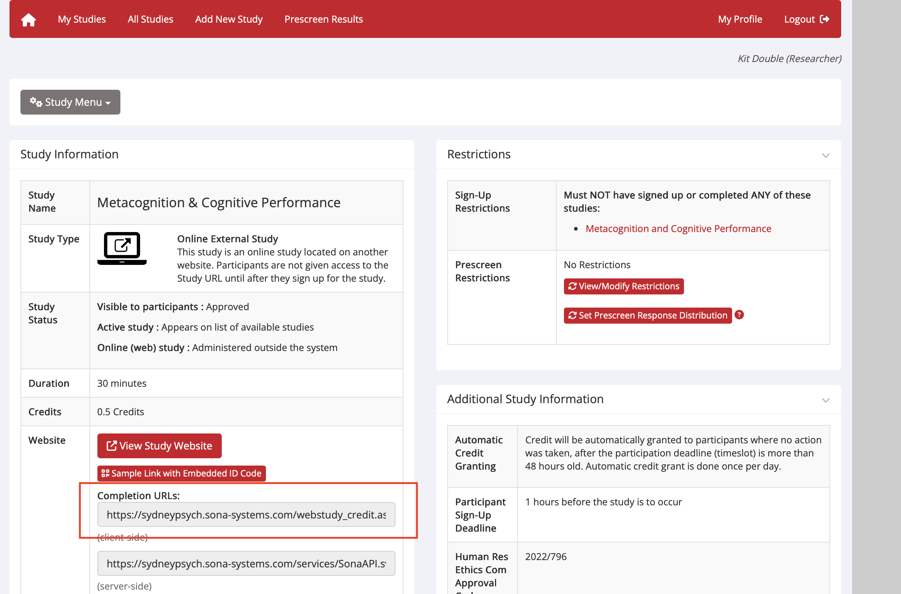

Onboarding
Software to install
- Visual Studio Code: Code editor for HTML/JS/CSS and Markdown. Download
- R: Statistical computing for data cleaning and analysis. Download
- R Studio: Provides a basic interface to R. Download
- Microsoft Teams: Lab communication and meetings. Download
- OneDrive (desktop app): Local sync of your lab folders with version history. Download
- EndNote: Reference manager with shared lab library. Download
- GitHub Desktop: Simple Git client for version control. Download
- JASP: Point-and-click stats (Bayesian and frequentist). Download
- Zoom: Online meetings and participant calls. Download
Accounts to set up
- A MetaForge account. You can join the MetaLab team using code MTVJ6K
- A SONA account (if using SONA). Apply to be added as a new user here.
- A Prolific account (if using Prolific).
- A Github account using the USYD enterprise version. To sign up you simply need to login. To access some of secure lab resources you will need to be added to the USYD Meta Lab Github Enterprise team (contact Kit with your unikey).
- A LabArchives Scheduler account to book the lab testing space. See the School intranet.
- You need to have been added to one of the lab ethics protocols. Honours students will need to manually apply to be added as a user on myResearch Ethics before being added.
Communication
Face-to-face communication is preferred whenever possible, either during our weekly one-on-one meetings or in the group lab meeting. For quick questions, please feel free to drop by if my door is open. Email should be reserved for more formal communication or for tasks that require detailed input, for example, requesting feedback on a draft manuscript or thesis section.
Larger multi-lab meetings focused on either cognition (SLAC) or emotion (REAL) also occur regularly and students are encouraged to attend.
Folders
Project folder structure
Projects follow a standard structure to keep code, analyses, and outputs tidy.
Project_Name/
├── README.md # Project overview and folder structure
├── .gitignore # Files to ignore in version control
├── experiments/
│ └── example-experiment/
│ ├── design/ # Task design files, protocols
│ ├── stimuli/ # Images, sounds, or other stimuli
│ ├── scripts/ # Code for running the experiment (e.g., jsPsych, MATLAB)
│ ├── data/
│ │ ├── metadata/ # Data dictionary and metadata files
│ │ ├── processed/ # Cleaned data ready for analysis
│ │ └── raw/ # Untouched raw data
│ ├── analysis/
│ │ ├── scripts/ # R, Python, MATLAB analysis scripts
│ │ ├── results/ # Figures, stats outputs, tables
│ │ ├── notebooks/ # RMarkdown or Jupyter notebooks
│ │ └── analysis_plan.Rmd # Pre-planned analysis description
│ ├── code/ # Shared functions or custom packages for this experiment
│ └── notes.md # Lab notes or changelog for the experiment
├── manuscripts/
├── reports/ # Internal reports or summaries
├── preregistration/ # Preregistration documents
└── presentations/ # Conference slides, posters, etc.
MetaLab::create_MetaLab_project("MyProject", "MyExperiment", "Directory")
Launching a study
Running a jsPsych Study
Using MetaForge with Automatic Redirect to SONA or Prolific.
üìù Step-by-Step Guide
üîπ Step 1: Build Your Experiment
Build your experiment on MetaForge
Enable MetaForge hosting under Experiment Options > Deploy. Then click Publish to Web
üîπ Step 2: Putting the study on Prolific
- In MetaForge, under Expeiemnt options > Deploy, click Prolific Credit.
- Go to Prolific.
- To be added to the lab team (and use the lab funds), let Kit know your Prolific username.
- Create a new study.
- Study name and Study description come directly from the ethics documents.
- Internal study name should used the format LastName-TASK-experiment-name.
- Typically, you want to limit the study to only desktop devices.
- Study URL was generated in Step 1. You should automatically append the Prolific ID to the URL by clicking Recording Prolific IDs = URL parameters. Make sure that it is appended with a '&' rather than a '?' if you already have a id paramater in the URL
- Completion paths can be set to automatic approve & pay. Copy the completion code (e.g. CGJ91R8S) into the Expeiemnt Options > Deploy menu under Prolific Credit.
- Set the length of time and pay people £6 per hour.
- Set the sample country and click Quota Sample to make sure you get a balanced sample between males and females.
üîπ Step 3: Putting the study on SONA
- In MetaForge, under Expeiemnt options > Deploy, click SONA Credit.
- You can read the SONA handbook for detailed procedures.
- Go to SONA.
- Select Add new Study from the menu bar.
- Select Online External Study.
- Study name, Brief Abstract, and Detailed Description come directly from the ethics documents (Teams > Ethics).
- Duration and credits should match so 1 = 60 minutes.
- Human Res Ethics Com Approval Code should be set to the ethics protocol number (Teams > Ethics). For example, 2022/796.
- Study URL was generated in Step 1. You should automatically append the SONA ID to the URL by appending
&SONAID=%SURVEY_CODE%. - Active Study? = Yes; Automatic Credit Granting = Yes. Everything else can be left as it is.
- Copy your SONA experiment ID and credit token into the Expeiemnt Options > Deploy menu under SONA Credit. See highlighted section below: 
- You need to Request approval of a NEW SONA study get your study approved by the School's research staff. Complete the form here.
- For the question asking you to copy and paste the description from ethics concerning SONApsych participants, you should copy from the ethics documents (Teams > Ethics > Application Form). For example, 2022/796 ethics docs read:
https://metaforge.live/host.html?id=EIGahsILLqfUZJBdE0qIgS0hVwi2_1765157335741&SONAID=%SURVEY_CODE%üîπ Step 4: Test the Study
- Visit your GitHub Pages study link.
- Add parameters to the URL to simulate real participants:
https://metaforge.live/host.html?id=EIGahsILLqfUZJBdE0qIgS0hVwi2_1765157335741&PROLIFIC_PID=123ABChttps://metaforge.live/host.html?id=EIGahsILLqfUZJBdE0qIgS0hVwi2_1765157335741&SONAID=S1234567
- Run the study yourself.
- Confirm:
- Data saves to MetaForge.
- Redirect works correctly.
üîπ Step 5: Preregistration
- If you are planning on preregistering your study, you need to do so before you start collecting data.
- The easiest place to preregister your study is probably AsPredicted.
üîπ Step 6: Go Live!
- Launch the study on SONA by adding slots or on Prolific by launching the study (or both).
- Monitor incoming data on your MetaForge project.
- If you are using OSF data storage, data can be manually downloaded from OSF or automatically downloaded using our R package:
MetaLab::combine_osf_csvs("YOUR_OSF_PROJECT_ID", folder = "../Data/")